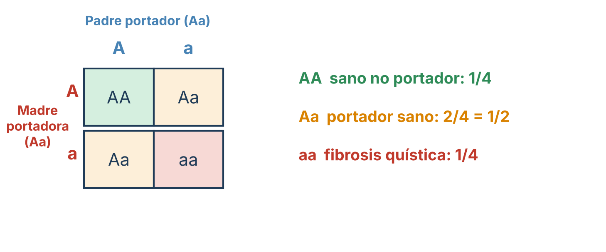
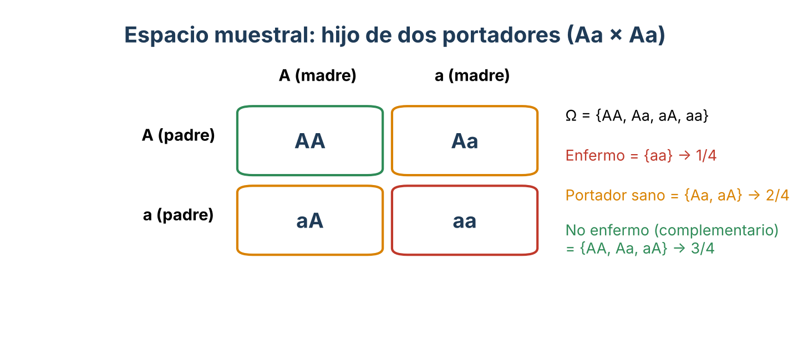
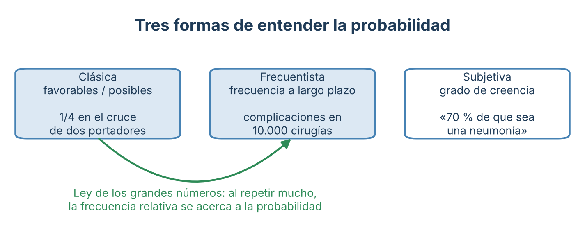
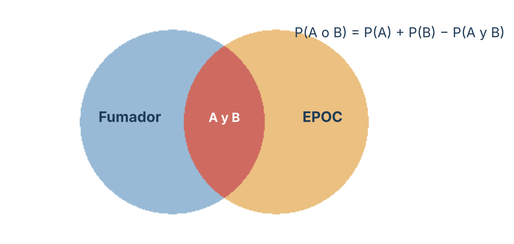
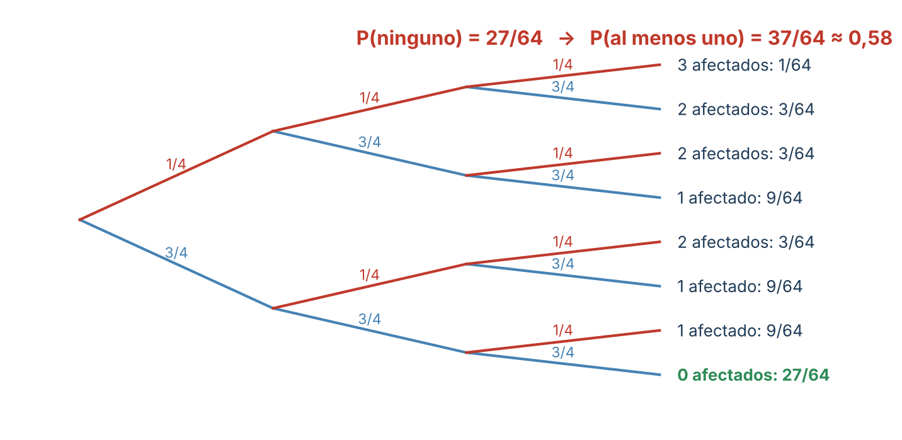

Bioestadística (1964) · Grado en Medicina · Curso 2027-2028
Tema 140Fundamentos de la teoría de la probabilidad y técnicas de recuento
Módulo 4. Probabilidad
Evaluación: el examen del Módulo 4 se hace a mano. Resuelve primero cada ejercicio con papel y calculadora, y usa el código solo para comprobar.
Fernando Borrás Rocher · Universidad Miguel Hernández de Elche · CC BY 4.0
Objetivos de aprendizaje
Al terminar esta sesión serás capaz de:
- Definir experimento aleatorio, espacio muestral y suceso con ejemplos clínicos.
- Distinguir las interpretaciones clásica, frecuentista y subjetiva de la probabilidad.
- Aplicar los axiomas de la probabilidad y las reglas del complementario, la unión y la intersección.
- Calcular probabilidades a partir de una tabla de frecuencias de una cohorte.
- Contar casos con permutaciones, variaciones y combinaciones.
- Comprobar por simulación un resultado calculado a mano (ley de los grandes números).
Cómo usar esta presentación
Usa el selector de arriba para dar el tema en una sesión completa o en dos sesiones intercaladas.
🎓 Sesión de clase magistral
- 1. Caso clínico de partida 5 min
- 2. Conceptos clave 10 min
- 5. Autoevaluación 5 min
Explica los conceptos, haz la pausa activa y cierra con las ideas clave.
💻 Sesión de Colab
- 3. Demostración: calcular y comprobar probabilidades 20 min
- 4. Práctica en la app Bioestadística 10 min
- 5. Autoevaluación 5 min
Cada estudiante abre su copia del cuaderno, predice el resultado y después ejecuta la celda.
Teclas: ← → para pasar · N notas del profesor · M cambiar de modo · F pantalla completa · Esc índice.
1. Caso clínico de partida
Consejo genético: dos portadores de fibrosis quística

- Cada hijo recibe un alelo de cada progenitor, al azar: cuatro combinaciones igual de probables.
- P(hijo afectado) = 1/4; P(portador sano) = 1/2; P(sano no portador) = 1/4.
- No se puede predecir un embarazo concreto, pero sí cuantificar la incertidumbre.
2. Conceptos clave
2.1 Experimento, espacio muestral y suceso

| Concepto | Definición | En el caso |
|---|---|---|
| Experimento aleatorio | Proceso cuyo resultado no se puede predecir con certeza | El genotipo de un hijo |
| Espacio muestral (Ω) | Conjunto de todos los resultados posibles | {AA, Aa, aA, aa}, donde «a» es el alelo mutado |
| Suceso | Subconjunto del espacio muestral | «Enfermo» = {aa}; «portador sano» = {Aa, aA} |
| Suceso complementario ($\bar{A}$) | Lo que ocurre cuando no ocurre A | «No enfermo» = {AA, Aa, aA} |
2. Conceptos clave
2.2 Tres formas de entender la probabilidad

| Interpretación | Definición | Ejemplo clínico |
|---|---|---|
| Clásica (Laplace) | Casos favorables / casos posibles, si todos son igual de probables | P(enfermo) = 1/4 en el cruce de dos portadores |
| Frecuentista | Frecuencia relativa a largo plazo, al repetir el experimento muchas veces | Proporción de complicaciones en 10.000 cirugías |
| Subjetiva | Grado de creencia de una persona, basado en su información | «Creo que hay un 70 % de probabilidad de que sea una neumonía» |
La ley de los grandes números une las dos primeras: al repetir un experimento muchas veces, la frecuencia relativa se acerca a la probabilidad.
2. Conceptos clave
2.3 Axiomas y reglas
Unión, intersección y complementario

- P(A o B) = P(A) + P(B) − P(A y B): si no se resta la intersección, se cuenta dos veces.
- P(no A) = 1 − P(A): el atajo para calcular «al menos uno».
2. Conceptos clave
2.4 Técnicas de recuento
Tres hijos: ¿al menos uno afectado?

- Con sucesos independientes, las probabilidades se multiplican a lo largo de cada rama.
- P(al menos uno) = 1 − P(ninguno) = 1 − (3/4)³ ≈ 0,58.
Pregunta para la clase: ¿Por qué no es 1/4 + 1/4 + 1/4 = 3/4?
Pausa activa
Piensa 30 segundos, comenta con quien tienes al lado y vota.
Un progenitor tiene una enfermedad autosómica dominante en heterocigosis (Aa) y el otro está sano (aa). ¿Qué probabilidad tiene un hijo de heredar la enfermedad?
En la sesión de Colab
Lo que acabas de ver se comprueba con datos en el cuaderno del Tema 140.
- Abre el cuaderno y guarda tu copia: Archivo → Guardar una copia en Drive.
- Ejecuta la celda de configuración.
- Ve a la demostración y predice cada resultado antes de ejecutar.
3. Demostración: calcular y comprobar probabilidades
3.1 El cruce de dos portadores
▶ En tu cuaderno: 3.1 El cruce de dos portadores. Antes de ejecutar, escribe qué esperas obtener.
A mano. Cada progenitor transmite el alelo normal (A) o el mutado (a) con probabilidad 1/2, de forma independiente. Los cuatro resultados son igual de probables:
| A (madre) | a (madre) | |
|---|---|---|
| A (padre) | AA | Aa |
| a (padre) | aA | aa |
- P(enfermo) = P(aa) = 1/4
- P(portador sano) = P(Aa o aA) = 2/4 = 1/2
- P(sano no portador) = P(AA) = 1/4
Comprobación por simulación. Simulamos 100.000 hijos.
import numpy as np
rng = np.random.default_rng(seed=140)
n_hijos = 100_000
alelo_padre = rng.choice(["A", "a"], size=n_hijos)
alelo_madre = rng.choice(["A", "a"], size=n_hijos)
enfermo = (alelo_padre == "a") & (alelo_madre == "a")
portador = (alelo_padre != alelo_madre)
print(f"Frecuencia de enfermos: {enfermo.mean():.4f} (teórica 0,25)")
print(f"Frecuencia de portadores: {portador.mean():.4f} (teórica 0,50)")3. Demostración: calcular y comprobar probabilidades
3.2 La ley de los grandes números
▶ En tu cuaderno: 3.2 La ley de los grandes números. Antes de ejecutar, escribe qué esperas obtener.
import matplotlib.pyplot as plt
frecuencia_acumulada = np.cumsum(enfermo) / np.arange(1, n_hijos + 1)
plt.figure(figsize=(8, 4))
plt.plot(np.arange(1, n_hijos + 1), frecuencia_acumulada)
plt.axhline(0.25, color="firebrick", linestyle="--", label="Probabilidad teórica (0,25)")
plt.xscale("log")
plt.xlabel("Número de hijos simulados (escala logarítmica)")
plt.ylabel("Frecuencia relativa de enfermos")
plt.title("La frecuencia relativa converge a la probabilidad")
plt.legend()
plt.show()Con pocos casos, la frecuencia observada oscila mucho; con muchos, se estabiliza alrededor de 0,25. Por eso las conclusiones basadas en muestras pequeñas son poco fiables.
3. Demostración: calcular y comprobar probabilidades
3.3 Al menos uno de tres: el complementario
▶ En tu cuaderno: 3.3 Al menos uno de tres: el complementario. Antes de ejecutar, escribe qué esperas obtener.
A mano. Calcular «al menos uno enfermo» directamente obliga a sumar muchos casos. Es más fácil por el complementario: «al menos uno» es lo contrario de «ninguno». Como los embarazos son independientes:
$$P(\text{ninguno enfermo}) = \left(\tfrac{3}{4}\right)^3 = \tfrac{27}{64} \approx 0{,}42$$
$$P(\text{al menos uno enfermo}) = 1 - \tfrac{27}{64} = \tfrac{37}{64} \approx 0{,}58$$
print("Cálculo:", 1 - (3/4) ** 3)
familias = rng.random((100_000, 3)) < 0.25 # True = hijo enfermo
print("Simulación:", familias.any(axis=1).mean())3. Demostración: calcular y comprobar probabilidades
3.4 Probabilidades a partir de una cohorte
▶ En tu cuaderno: 3.4 Probabilidades a partir de una cohorte. Antes de ejecutar, escribe qué esperas obtener.
Con datos reales, la probabilidad se estima con la frecuencia relativa (interpretación frecuentista). Usamos el registro cardiovascular del Módulo 3.
import pandas as pd
cohorte = pd.read_csv("https://raw.githubusercontent.com/fborrasumh/bioestadistica/main/datos/cohorte_limpia.csv")
cohorte = cohorte.dropna(subset=["fumador"])
tabla = pd.crosstab(cohorte["diabetes"], cohorte["fumador"], margins=True, margins_name="Total")
tablan = len(cohorte)
D = cohorte["diabetes"] == "Sí"
F = cohorte["fumador"] == "Sí"
p_d, p_f, p_d_y_f = D.mean(), F.mean(), (D & F).mean()
print(f"P(D) = {p_d:.3f} · P(F) = {p_f:.3f} · P(D ∩ F) = {p_d_y_f:.3f}")
p_d_o_f = p_d + p_f - p_d_y_f
print(f"P(D ∪ F) por la regla de la unión: {p_d_o_f:.3f}")
print(f"P(D ∪ F) contando directamente: {(D | F).mean():.3f}")
print(f"P(no D) = 1 − P(D) = {1 - p_d:.3f}")¿Son independientes la diabetes y el tabaco en esta cohorte? Si lo fueran, P(D ∩ F) sería P(D) × P(F):
print(f"P(D) × P(F) = {p_d * p_f:.3f} frente a P(D ∩ F) = {p_d_y_f:.3f}")Los dos valores no coinciden exactamente, pero son del mismo orden. ¿Indica la diferencia que diabetes y tabaco no son independientes, o es una fluctuación esperable con 391 pacientes? En el Tema 150 estudiaremos la independencia con la probabilidad condicionada. En el Tema 230 aprenderemos a decidir si una diferencia como esta puede deberse al azar.
3. Demostración: calcular y comprobar probabilidades
3.5 Técnicas de recuento
▶ En tu cuaderno: 3.5 Técnicas de recuento. Antes de ejecutar, escribe qué esperas obtener.
A mano, y después con el módulo math:
- Órdenes posibles de atender a 5 pacientes: 5! = 120.
- Formas de asignar las guardias de lunes, martes y miércoles a 3 de 10 residentes: 10 × 9 × 8 = 720.
- Formas de elegir 3 de 10 historias para una auditoría: $\binom{10}{3} = \frac{720}{3!} = 120$.
import math
print("Permutaciones de 5:", math.factorial(5))
print("Variaciones de 10 tomados de 3 en 3:", math.perm(10, 3))
print("Combinaciones de 10 tomados de 3 en 3:", math.comb(10, 3))3. Demostración: calcular y comprobar probabilidades
3.6 Probabilidad con combinaciones
▶ En tu cuaderno: 3.6 Probabilidad con combinaciones. Antes de ejecutar, escribe qué esperas obtener.
En una planta hay 12 pacientes, 2 de ellos colonizados por Staphylococcus aureus resistente a meticilina (SARM). Se eligen al azar 4 para un cribado. ¿Qué probabilidad hay de que el cribado incluya a los dos colonizados?
A mano. Casos posibles: $\binom{12}{4} = 495$. Casos favorables: los 2 colonizados y 2 de los 10 restantes, $\binom{2}{2}\binom{10}{2} = 45$. Probabilidad: 45 / 495 ≈ 0,091.
favorables = math.comb(2, 2) * math.comb(10, 2)
posibles = math.comb(12, 4)
print(f"P = {favorables} / {posibles} = {favorables / posibles:.3f}")
planta = np.array([1, 1] + [0] * 10) # 1 = colonizado
cribados = np.array([rng.choice(planta, size=4, replace=False).sum() for _ in range(50_000)])
print(f"Simulación: {(cribados == 2).mean():.3f}")Ampliación
Ampliación: el problema de los cumpleaños en la planta
En una planta de 30 pacientes, ¿qué probabilidad hay de que al menos dos cumplan años el mismo día? La intuición suele decir que es baja. Por el complementario:
$$P(\text{todos distintos}) = \frac{365}{365} \cdot \frac{364}{365} \cdots \frac{336}{365}$$
def prob_coincidencia(n):
p_distintos = 1.0
for i in range(n):
p_distintos *= (365 - i) / 365
return 1 - p_distintos
for n in [10, 23, 30, 50]:
print(f"{n} personas: {prob_coincidencia(n):.2f}")Con solo 23 personas, la probabilidad ya supera el 50 %. Las coincidencias son mucho más probables de lo que parece. Es una advertencia frente a los «agrupamientos» de casos que se interpretan como brotes sin un análisis estadístico.
Ampliación
Ampliación: errores frecuentes
Sumar probabilidades de sucesos compatibles sin restar la intersección: P(D ∪ F) ≠ P(D) + P(F).
Multiplicar probabilidades de sucesos que no son independientes.
Calcular «al menos uno» sumando: 3 × 1/4 = 0,75 no es la probabilidad de al menos un hijo enfermo entre tres.
Pensar que el azar «compensa»: tras dos hijos sanos, la probabilidad de que el tercero esté enfermo sigue siendo 1/4 (falacia del jugador).
Confundir combinaciones y variaciones: si el orden no importa, se usan combinaciones.
Dar por buena una probabilidad estimada con pocos casos.
4. Práctica en la app Bioestadística
Abre la unidad 140 de la app Bioestadística y completa sus misiones:
- Misión básica (sin asistente): calcular a mano probabilidades de cruces genéticos con herencia autosómica dominante y recesiva.
- Misión clínica (con pistas): estimar probabilidades de unión, intersección y complementario en una cohorte sintética y comprobar si dos factores son independientes.
- Misión reto (con asistente): resolver un problema de combinaciones de un ensayo clínico y comprobarlo por simulación. Verificar paso a paso el razonamiento del asistente.
Al terminar, exporta el informe de la unidad.
5. Autoevaluación
Responde a mano, sin asistente y sin ejecutar código.
5. Autoevaluación
Elige una opción: verás la explicación.
Un progenitor tiene una enfermedad autosómica dominante en heterocigosis (Aa) y el otro está sano (aa). ¿Qué probabilidad tiene un hijo de heredar la enfermedad?
P(diabetes) = 0,20, P(HTA) = 0,40 y P(diabetes y HTA) = 0,12. ¿Cuál es P(diabetes o HTA)?
La probabilidad de complicación de una cirugía es 0,1. ¿Qué probabilidad hay de al menos una complicación en 2 cirugías independientes?
¿De cuántas formas se pueden elegir 2 pacientes de 6 para un estudio piloto, si el orden no importa?
Una pareja de portadores de fibrosis quística ha tenido dos hijos sanos. ¿Qué probabilidad tiene el tercero de estar enfermo?
Ideas clave
- La probabilidad cuantifica la incertidumbre; se interpreta como proporción de casos, frecuencia a largo plazo o grado de creencia.
- Complementario: $1 - P(A)$; unión: $P(A) + P(B) - P(A \cap B)$; intersección de independientes: $P(A) \cdot P(B)$.
- «Al menos uno» se calcula casi siempre por el complementario.
- Combinaciones si el orden no importa; variaciones si importa.
- La simulación comprueba un cálculo a mano y muestra la ley de los grandes números.
Glosario
| Término | Definición |
|---|---|
| Experimento aleatorio | Proceso cuyo resultado no se puede predecir con certeza |
| Espacio muestral | Conjunto de todos los resultados posibles |
| Suceso | Subconjunto del espacio muestral |
| Sucesos incompatibles | Sucesos que no pueden ocurrir a la vez |
| Sucesos independientes | Sucesos en los que la ocurrencia de uno no cambia la probabilidad del otro |
| Ley de los grandes números | Al repetir un experimento, la frecuencia relativa se acerca a la probabilidad |
| Permutación | Ordenación de todos los elementos de un conjunto |
| Variación | Selección ordenada de k elementos de n |
| Combinación | Selección sin orden de k elementos de n |
Para saber más
- Documentación del módulo math: funciones combinatorias
- Bland JM, Altman DG. Statistics notes: the odds ratio. BMJ. 2000;320(7247):1468. doi:10.1136/bmj.320.7247.1468 (Introduce la relación entre probabilidad y odds que usaremos en el Tema 230.)